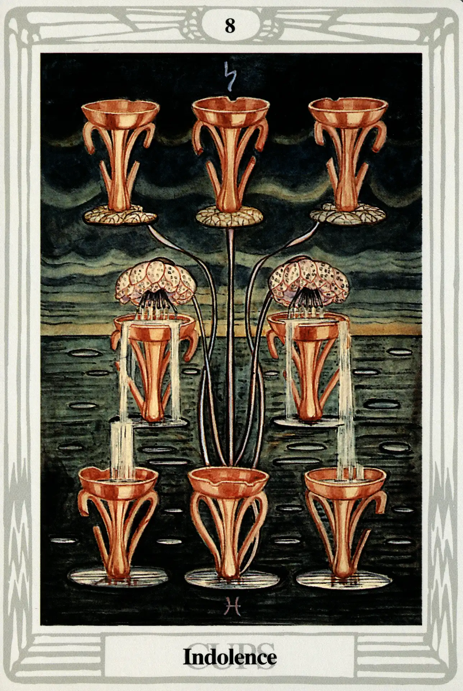

Cups
Eight of Cups
Indolence

(Saturn in Pisces)
0° to 10° Pisces
February 19 to February 28
Original Title: Lord of Abandoned Success.
Golden Dawn Model: From clouds at the bottom of the card a hand appears, holding the stems of lotuses or water lilies. There are only two flowers that bend over and fill to overflowing the two central cups. The overflow pours into (but does not fill) the three lowest cups. There are three cups above the two central cups, which remain empty.
Queen Scale for Hod: Orange.
The Four Scales for Saturn: Indigo; Black; Blue-black; Black, rayed Blue.
The Four Sales for Pisces: Crimson (ultra Violet); Buff, flecked silver White; Light Translucent pinkish Brown; Stone color.
Formula: 8 (Hod) of Cups (Briah) + Saturn in Pisces = INDOLENCE
Much to my wife's disappointment (this is her birthday card), Crowley didn't have much nice to say about the Eight of Cups. In fact, he called it “the German Measles of Christian Mysticism.” and “the very apex of unpleasantness.”
Is it any wonder? This card has a bad attitude (Sorry, Dear). Saturn is a heavy and hard-nosed downer and, this far down the Tree of Life, delicate Pisces doesn't have enough juice left to put up any kind of fight. This card will have you “playin' solitaire till dawn, with a deck of 51.”
Crowley's description of this unfortunate blending of forces is priceless:
This card represents a party for which all preparations have been made; but the host has forgotten to invite the guests; or the caterers have not delivered the good cheer. There is this difference, though, that it is in some way or other the host's own fault.
Harris's interpretation of lndolence is perfect—a stagnant pool, drooping blossoms. The top three cups and one at the bottom of the card are empty; the two in the center are spilling half their contents back into the sea.